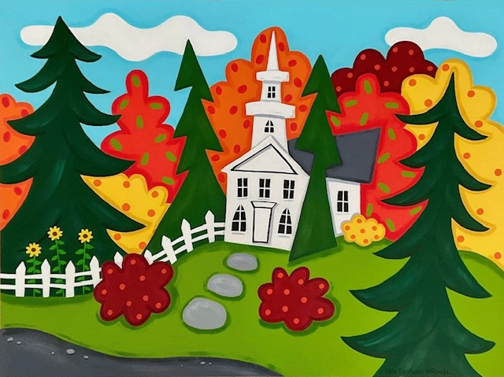
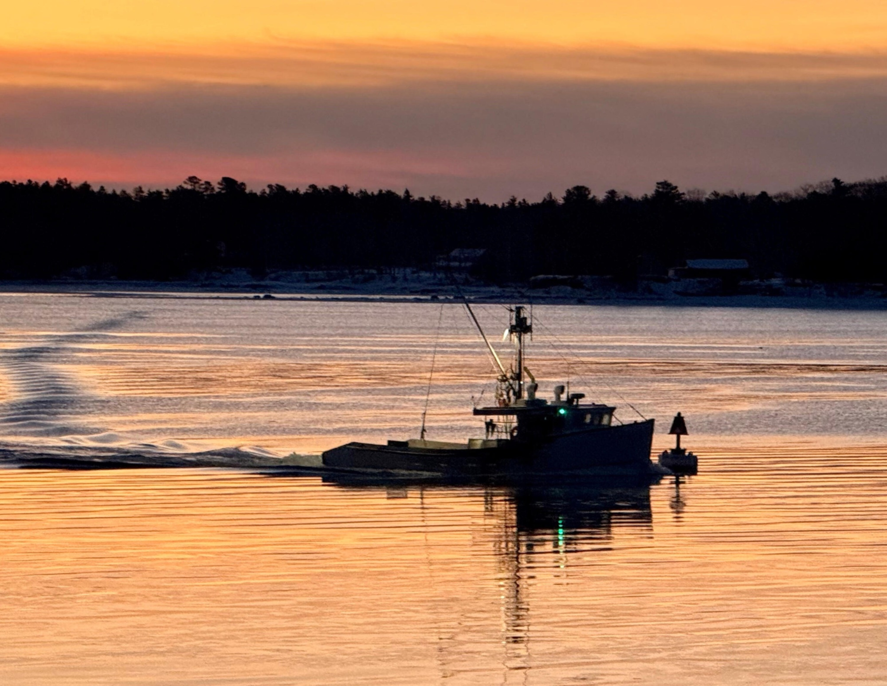

Live panels, gallery evenings, and virtual book circles. The gatherings where the writing and the conversations come into a room together.


Specific dates for Radio Maine Live, Artful Escapes, and book circles are announced through the newsletter as the season unfolds. Subscribers hear about each gathering before it’s posted anywhere else.
Subscribe to The Bountiful Path → Portland Art Gallery events →